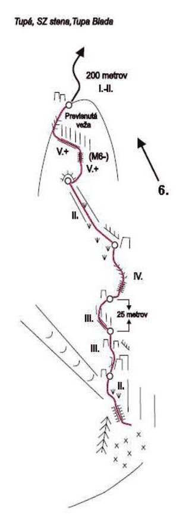
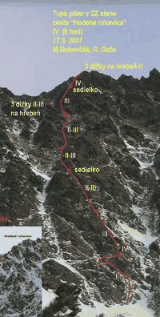

<!-- SUUNTOPO image-based topo viewer with selector -->
<!-- appMode: 0=selector, 1=topo map (image), 2=info panel -->

<uiView onLoad="

  // ===================================================================
  // TOPO DATA — 2 topos with image files
  // ===================================================================

  var topoImages = ['topo1.png', 'topo2.png'];

  var topoData = [
    {
      name: 'Tupa Bleda',
      wall: 'Tupa, SZ stena',
      grade: 'V+',
      imgW: 313, imgH: 880,
      anchors: [
        { x: 0.49, y: 0.88, grade: '',      len: '',     info: 'Nastup pod skalnou stenou. Sypka sutina a stromy.' },
        { x: 0.47, y: 0.77, grade: 'II.',   len: '45m',  info: 'Lahke lezenie cez skary. Stupanie mierne doprava.' },
        { x: 0.45, y: 0.67, grade: 'III.',  len: '40m',  info: 'Skary a policka, lezenie priamo hore.' },
        { x: 0.42, y: 0.57, grade: 'III.',  len: '35m',  info: 'Strmsie lezenie popri skvirach.' },
        { x: 0.52, y: 0.46, grade: 'IV.',   len: '25m',  info: 'Traverz doprava 25 metrov. Exponovane lezenie.' },
        { x: 0.40, y: 0.36, grade: 'II.',   len: '40m',  info: 'Miernejsi teren, pokracovanie hore dolava.' },
        { x: 0.34, y: 0.26, grade: 'V.+',  len: '35m',  info: 'Tazka dlzka cez previs a skary. Kluc cesty!' },
        { x: 0.32, y: 0.17, grade: 'V.+',  len: '30m',  info: 'Pokracovanie cez previsnutu vezu. Miesto (M6-).' },
        { x: 0.28, y: 0.09, grade: 'I.-II.', len: '200m', info: 'Lahky hreben, 200 metrov chodze k vrcholu.' }
      ]
    },
    {
      name: 'Hodena rukavica',
      wall: 'Tupa pilier, SZ stena',
      grade: 'IV',
      imgW: 200, imgH: 396,
      anchors: [
        { x: 0.58, y: 0.92, grade: 'IV.',    len: '35m',  info: 'Nastup. Lezenie stenou hore doprava.' },
        { x: 0.52, y: 0.82, grade: 'III.',   len: '40m',  info: 'Pokracovanie hore. Stupne III.' },
        { x: 0.48, y: 0.72, grade: 'III.',   len: '35m',  info: 'Dalsia dlzka priamo hore.' },
        { x: 0.42, y: 0.60, grade: 'II-III.', len: '40m', info: 'Sedielko. Miernejsi teren.' },
        { x: 0.40, y: 0.48, grade: 'II-III.', len: '35m', info: 'Pokracovanie cez sedielko.' },
        { x: 0.38, y: 0.38, grade: 'III.',   len: '35m',  info: 'Strmsia cast. Dobry chyty.' },
        { x: 0.42, y: 0.27, grade: 'IV.',    len: '30m',  info: 'Sedielko. Exponovane lezenie.' },
        { x: 0.40, y: 0.14, grade: 'I-II.',  len: '50m',  info: '3 dlzky na hreben II. Lahky teren k vrcholu.' }
      ]
    }
  ];

  // ===================================================================
  // BUILD WAYPOINTS — anchors + midpoints
  // ===================================================================

  var allWaypoints = [];
  var i, j;
  for (i = 0; i < topoData.length; i++) {
    var wps = [];
    var ancs = topoData[i].anchors;
    for (j = 0; j < ancs.length; j++) {
      wps.push({ x: ancs[j].x, y: ancs[j].y, pitchIdx: j, isAnchor: true });
      if (j < ancs.length - 1) {
        var mx = (ancs[j].x + ancs[j + 1].x) / 2;
        var my = (ancs[j].y + ancs[j + 1].y) / 2;
        wps.push({ x: mx, y: my, pitchIdx: j + 1, isAnchor: false });
      }
    }
    allWaypoints.push(wps);
  }

  // ===================================================================
  // STATE
  // ===================================================================

  var DISP_W = 466;
  var SC = 233;
  var appMode = 0;
  var selIdx = 0;
  var curTopo = 0;
  var curWP = 0;

  // ===================================================================
  // GRADE COLORING
  // ===================================================================

  var gradeColor = function(grade) {
    if (!grade) { return '#AAAAAA'; }
    var g = grade.replace('.', '').replace('+', '').replace('-', '');
    if (g === 'I' || g === 'I-II' || g === 'II') { return '#55CC55'; }
    if (g === 'III' || g === 'III+') { return '#FFFFFF'; }
    if (g === 'IV' || g === 'IV+') { return '#FFDD00'; }
    return '#FF5555';
  };

  // ===================================================================
  // SELECTOR VIEW — canvas drawn
  // ===================================================================

  var drawSelector = function(ctx) {
    var w = ctx.width || 466;
    var h = ctx.height || 466;
    var cx = w / 2;
    var cy = h / 2;
    var maxR = cx;

    ctx.fillStyle = '#1A1A1A';
    ctx.fillRect(0, 0, w, h);

    // Title
    ctx.fillStyle = '#FFDD00';
    ctx.font = '32px monospace';
    var title = 'SUUNTOPO';
    var tw = ctx.measureText(title).width;
    ctx.fillText(title, (w - tw) / 2, 90);

    // Divider
    ctx.strokeStyle = '#333333';
    ctx.lineWidth = 1;
    ctx.beginPath();
    ctx.moveTo(80, 110);
    ctx.lineTo(w - 80, 110);
    ctx.stroke();

    // Topo list
    var itemH = 60;
    var startY = 155;
    for (var i = 0; i < topoData.length; i++) {
      var t = topoData[i];
      var y = startY + i * itemH;
      var isSel = (i === selIdx);

      if (isSel) {
        ctx.fillStyle = '#FFDD00';
        ctx.font = '24px monospace';
        ctx.fillText('>', 70, y);
      }

      ctx.fillStyle = isSel ? '#FFDD00' : '#FFFFFF';
      ctx.font = '22px monospace';
      ctx.fillText(t.name, 95, y);

      ctx.fillStyle = isSel ? '#FFDD00' : gradeColor(t.grade);
      ctx.font = '16px monospace';
      var detail = t.grade + '  ' + String(t.anchors.length) + ' pitches';
      ctx.fillText(detail, 95, y + 22);
    }

    // Hint
    ctx.fillStyle = '#AAAAAA';
    ctx.font = '16px monospace';
    var hint = 'CROWN = select';
    var hw = ctx.measureText(hint).width;
    ctx.fillText(hint, (w - hw) / 2, h - 55);

    // Vignette
    ctx.fillStyle = '#1A1A1A';
    ctx.beginPath(); ctx.moveTo(0, 0); ctx.lineTo(cx, 0);
    ctx.arc(cx, cy, maxR, -Math.PI / 2, -Math.PI, true); ctx.lineTo(0, 0); ctx.fill();
    ctx.beginPath(); ctx.moveTo(cx, 0); ctx.lineTo(w, 0); ctx.lineTo(w, cy);
    ctx.arc(cx, cy, maxR, 0, -Math.PI / 2, true); ctx.fill();
    ctx.beginPath(); ctx.moveTo(w, cy); ctx.lineTo(w, h); ctx.lineTo(cx, h);
    ctx.arc(cx, cy, maxR, Math.PI / 2, 0, true); ctx.fill();
    ctx.beginPath(); ctx.moveTo(cx, h); ctx.lineTo(0, h); ctx.lineTo(0, cy);
    ctx.arc(cx, cy, maxR, Math.PI, Math.PI / 2, true); ctx.fill();
  };

  // ===================================================================
  // IMAGE VIEW — position update
  // ===================================================================

  var updateImageView = function() {
    var td = topoData[curTopo];
    var wps = allWaypoints[curTopo];
    var wp = wps[curWP];
    var dispScale = DISP_W / td.imgW;
    var ax = wp.x * td.imgW * dispScale;
    var ay = wp.y * td.imgH * dispScale;
    var imgLeft = Math.round(SC - ax);
    var imgTop = Math.round(SC - ay);
    var dispImgW = Math.round(td.imgW * dispScale);

    // Show correct image, hide the other
    setStyle('#topo-img-0', 'left', curTopo === 0 ? (imgLeft + 'px') : '-9999px');
    setStyle('#topo-img-0', 'top', curTopo === 0 ? (imgTop + 'px') : '-9999px');
    setStyle('#topo-img-0', 'width', dispImgW + 'px');
    setStyle('#topo-img-1', 'left', curTopo === 1 ? (imgLeft + 'px') : '-9999px');
    setStyle('#topo-img-1', 'top', curTopo === 1 ? (imgTop + 'px') : '-9999px');
    setStyle('#topo-img-1', 'width', dispImgW + 'px');

    // HUD
    var pitch = td.anchors[wp.pitchIdx];
    var hud = String(wp.pitchIdx + 1) + '/' + String(td.anchors.length);
    if (pitch.grade) { hud = hud + '  ' + pitch.grade; }
    if (pitch.len) { hud = hud + '  ' + pitch.len; }
    if (!wp.isAnchor) { hud = hud + '  ~'; }
    setText('#hud-text', hud);
    setText('#topo-name', td.name);
  };

  // ===================================================================
  // INFO PANEL
  // ===================================================================

  var wrapLines = function(text, maxChars, maxLines) {
    var result = [];
    var remaining = text || '';
    var n;
    for (n = 0; n < maxLines; n++) {
      if (remaining.length <= maxChars) {
        result.push(remaining);
        remaining = '';
        break;
      }
      var cut = remaining.lastIndexOf(' ', maxChars);
      if (cut < 1) { cut = maxChars; }
      result.push(remaining.substring(0, cut));
      remaining = remaining.substring(cut + 1);
    }
    while (result.length < maxLines) { result.push(' '); }
    return result;
  };

  var updateInfoPanel = function() {
    var td = topoData[curTopo];
    var wps = allWaypoints[curTopo];
    var wp = wps[curWP];
    var pitch = td.anchors[wp.pitchIdx];
    var title = String(wp.pitchIdx + 1) + '.';
    if (pitch.grade) { title = title + '  ' + pitch.grade; }
    setText('#info-title', title);
    setText('#info-length', pitch.len || '');
    var lines = wrapLines(pitch.info, 24, 3);
    setText('#info-desc1', lines[0]);
    setText('#info-desc2', lines[1]);
    setText('#info-desc3', lines[2]);
    var pos = td.name + '  ' + String(wp.pitchIdx + 1) + '/' + String(td.anchors.length);
    setText('#info-pos', pos);
  };

  // ===================================================================
  // MODE SWITCHING
  // ===================================================================

  var switchMode = function(newMode) {
    appMode = newMode;
    if (newMode === 0) {
      setStyle('#selector-view', 'left', '0px');
      setStyle('#topo-view', 'left', '600px');
      setStyle('#info-view', 'left', '600px');
      control('#sel-canvas', 'REFRESH');
    } else if (newMode === 1) {
      setStyle('#selector-view', 'left', '-600px');
      setStyle('#topo-view', 'left', '0px');
      setStyle('#info-view', 'left', '600px');
      updateImageView();
    } else {
      setStyle('#selector-view', 'left', '-600px');
      setStyle('#topo-view', 'left', '-600px');
      setStyle('#info-view', 'left', '0px');
      updateInfoPanel();
    }
  };

"

onActivate="
  $.subscribe('Zapp/{zapp_index}/Output/appMode', function(v) {
    switchMode(v);
  });
  $.subscribe('Zapp/{zapp_index}/Output/selectorIdx', function(v) {
    selIdx = v;
    if (appMode === 0) { control('#sel-canvas', 'REFRESH'); }
  });
  $.subscribe('Zapp/{zapp_index}/Output/topoIdx', function(v) {
    curTopo = v;
  });
  $.subscribe('Zapp/{zapp_index}/Output/anchorIdx', function(v) {
    curWP = v;
    if (appMode === 1) { updateImageView(); }
    if (appMode === 2) { updateInfoPanel(); }
  });
  switchMode(0);
"

onDeactivate="">

  <div id="suuntoplus" style="width:100%; height:100%; background-color:#1A1A1A;">

    <!-- SELECTOR VIEW — canvas -->
    <div id="selector-view" style="position:absolute; left:0px; top:0px; width:100%; height:100%;">
      <object id="sel-canvas" type="canvas"
              build="ctx => drawSelector(ctx)"
              style="position:absolute; left:0; top:0; width:100%; height:100%;" />
    </div>

    <!-- TOPO VIEW — image based -->
    <div id="topo-view" style="position:absolute; left:600px; top:0px; width:100%; height:100%;
                background-color:#1A1A1A;">
      
      

      <!-- Anchor marker at screen center -->
      <div style="position:absolute; left:218px; top:218px; width:30px; height:30px;
                  border-radius:50%; border:3px solid #FFDD00;" />

      <!-- Topo name at top -->
      <div style="position:absolute; top:18px; width:100%; text-align:center;">
        <span id="topo-name" class="sp-t-s" style="color:#AAAAAA;"> </span>
      </div>

      <!-- HUD at bottom -->
      <div style="position:absolute; left:0px; bottom:45px; width:100%; text-align:center;">
        <span id="hud-text" class="sp-t-m" style="color:#FFFFFF;">1/9</span>
      </div>
    </div>

    <!-- INFO VIEW -->
    <div id="info-view"
         style="position:absolute; left:600px; top:0px; width:100%; height:100%;
                background-color:#1A1A1A;">
      <div style="position:absolute; top:100px; width:100%; text-align:center;">
        <span id="info-title" class="sp-t-l" style="color:#FFDD00;">1.</span>
      </div>
      <div style="position:absolute; top:145px; left:80px; width:306px; height:1px;
                  background-color:#333333;" />
      <div style="position:absolute; top:160px; width:100%; text-align:center;">
        <span id="info-length" class="sp-t-m" style="color:#FFFFFF;">--</span>
      </div>
      <div style="position:absolute; top:205px; left:80px; width:306px; text-align:center;">
        <span id="info-desc1" class="sp-t-s" style="color:#AAAAAA;">--</span>
      </div>
      <div style="position:absolute; top:237px; left:80px; width:306px; text-align:center;">
        <span id="info-desc2" class="sp-t-s" style="color:#AAAAAA;"> </span>
      </div>
      <div style="position:absolute; top:269px; left:80px; width:306px; text-align:center;">
        <span id="info-desc3" class="sp-t-s" style="color:#AAAAAA;"> </span>
      </div>
      <div style="position:absolute; bottom:70px; width:100%; text-align:center;">
        <span id="info-pos" class="sp-t-s" style="color:#AAAAAA;">1 / 9</span>
      </div>
      <div style="position:absolute; bottom:40px; width:100%; text-align:center;">
        <span class="sp-t-s" style="color:#FFDD00;">^  v</span>
      </div>
    </div>

  </div>

  <userInput>
    <pushButton name="up"
      onClick="$.put('/Zapp/{zapp_index}/Event', 1, null, 'int32');" />
    <pushButton name="down"
      onClick="$.put('/Zapp/{zapp_index}/Event', 3, null, 'int32');" />
    <pushButton name="next"
      onClick="$.put('/Zapp/{zapp_index}/Event', 5, null, 'int32');"
      onLongPressStart="$.put('/Zapp/{zapp_index}/Event', 6, null, 'int32');" />
  </userInput>

</uiView>
